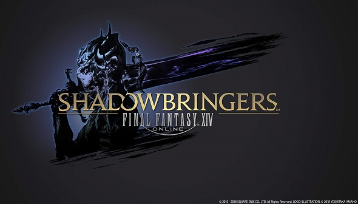

SHADOWBRINGERS
Les nations d'Ala Mhigo et de Doma se sont enfin libérées du joug de l'Empire, et l'on scande
votre
nom d'un bout à l'autre d'Hydaelyn. Derrière ce chant de triomphe résonnent cependant des
harmonies
dissonantes. Une voix mystérieuse s'insinue depuis peu dans votre esprit et celui de vos amis
Héritiers de la Septième Aube. Un à un, vous les voyez succomber à cet appel venu d'ailleurs et
sombrer dans un profond coma. Et alors que la guerre entre Garlemald et les forces alliées
atteint
son paroxysme, cette voix vous arrache à votre combat. Elle vous révèle qu'elle souhaite vous
guider
vers un autre monde, mais à quoi vous attendre une fois là-bas ? À l'inéluctable anéantissement,
ou
à la naissance d'un nouvel espoir dans les Ténèbres ?